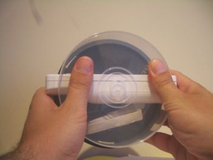

Constrúyete tu propio volante inhalámbrico Tarri-Wheel, a partir de un mando de la wii y una tarrina de CDs 😉
Una de las utilidades es controlar robots. Como ahora mismo no tengo aquí ninguno con ruedas (Andrés, necesito el skybot!!! 🙂 ), he usado un servo:

Hay que mover a Yossua con un tarri-wheel. Mif, vete preparando el tuyo.
Por cierto, Juan, tu Skybot esta en mi casa 😉